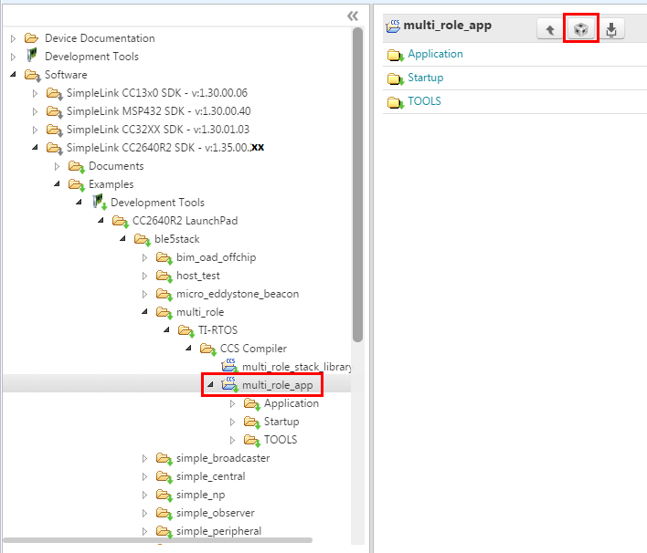

Developing with CCS¶
Installing Code Composer Studio (CCS)¶
The CCS toolchain contains many features beyond the scope of this document. More information and documentation can be found on the CCS Webpage.
Check the BLE-Stack 3.01.00.05 release notes to see which CCS version to use and any required workarounds. Object code produced by CCS may differ in size and performance as compared to IAR produced object code.
The following procedure describes installing and configuring the correct version of CCS and the necessary tools.
Install Code Composer Studio for ARM
- Download Code Composer Studio
- Start the installation process and accept the license agreement. It is recommended to install CCS in its default location.
- In the Processor Support section, select SimpleLink CC13xx and CC26xx Wireless MCUs.
- Under the Debug Probes section, CCS will install support for TI XDS Debug Probe Support. This option supports the XDS110 debugger.
- Start the installation by selecting Finish.
Attention
The version required is stated in the release notes.
Verify ARM Compiler Tools version
- If needed, the CCS and ARM compiler versions can be verified by going to into Help -> About Code Composer Studio. Under the Installation Details button, you can determine the ARM Compiler Tools version. Please ensure this version satisfies the version requirements as stated in the release notes.
- If an update is required, refer to Installing a Specific TI ARM Compiler for the procedure to install the required TI ARM Compiler version.
Installing a Specific TI ARM Compiler¶
To install a specific TI ARM Compiler, refer to the following steps and Figure 7.
- Help -> Install New Software
- Under the Work with: drop-down list, select Code Generation Tools Update
- Uncheck Show only the latest versions of available software
- Expand TI Compiler Update.
- Select the desired ARM Compiler Tools version as stated in the release notes.
- Press Next to complete the installation. You may have to restart CCS afterwards.

Figure 7. TI ARM Compiler Version in Code Composer Studio
Discovering CCS products¶
Code Composer Studio automatically discovers the SimpleLink CC2640R2 SDK if it installed in its
default installation directory (c:/ti). Once discovered by CCS, it defines a
build environment variable named COM_TI_SIMPLELINK_CC2640R2_SDK_INSTALL_DIR
which is used by BLE-Stack projects.
If a BLE-Stack project is imported from a path other than what was specified
during the SimpleLink CC2640R2 SDK installation, the COM_TI_SIMPLELINK_CC2640R2_SDK_INSTALL_DIR
variable must be redefined after the import proceeding at a project-by-project
basis.
To redefine this variable:
Open the CCS project’s properties (Project -> Properties)
Navigate to Resource -> Linked Resources and edit
COM_TI_SIMPLELINK_CC2640R2_SDK_INSTALL_DIRand have it point to your imported root directory location.
Figure 8. Redefining
COM_TI_SIMPLELINK_CC2640R2_SDK_INSTALL_DIR
Importing CCS projects¶
This section describes how to import and build an existing project and references the multi_role project. All of BLE-Stack projects included in the development kit have a similar structure.
Open the CCS IDE from the Start Menu.
Create a workspace.
Attention
Ensure that the CCS workspace path does not contain a whitespace.
Import a CCS Project using Resource Explorer
- Open Resource Explorer (if not open already) View -> Resource Explorer
- Navigate to the CCS folder for your chosen example: Software -> SimpleLink CC2640R2 SDK -> Examples -> CC2640R2 Launchpad -> ble5stack -> multi_role -> TI-RTOS -> CCS Compiler -> multi_role_app
Figure 9. Import CCS Projects
Select the CCS Logo button to import project into Project Explorer
Attention
The import process will also install the SimpleLink CC2640R2 SDK if a local version does not exist. You must accept the End User License Agreement to proceeed.

Figure 10. Install SimpleLink CC2640R2 SDK
- If you get a pop-up window with an error message, under “Details >>”
saying “Error: A project with the name ‘xx_stack_library’ already exists in the workplace!”, that is fine. You accidentally imported the stack twice. Just click OK.
- If everything is successful, two projects should appear in Resource
Explorer: one for the application code and one for the stack code (either stack or stack_library project).
Note
Only projects part of the BLE stack will have an app and a stack project.

Figure 11. Projects Imported into CCS
Attention
Do not use the Rename option found inside CCS to rename your project.
This may change certain build parameters and not others, which can lead to
build errors and is irreversible.
To rename a project, you should use the Copy and paste options found
inside CCS. As you Paste the project, you have the option of choosing a
new project name. This process is to be repeated for both application and
stack projects.
After pasting both project, you need to modify the application project’s properties and update its “Project Reference” (need to show advanced settings) to only select newly pasted stack project.
BLE-Stack CCS project build configurations¶

Figure 12. CCS Project Explorer
This and all BLE-Stack project workspaces contain various projects and build configurations as shown in Table 6. *_StackLibrary build configurations build the stack as a library as described in Stack Library Configuration (_stack_library).
Click the project name in the file explorer to select the project as the active project. In Figure 12., the application is selected as the active project. Each of these projects produces a separate, downloadable image.
The simple_peripheral sample project is the primary sample application for the description of a generic application in this guide. The simple_peripheral project implements a basic Bluetooth low energy peripheral device including a GATT server with GATT services. This project can be used as a framework for developing peripheral-role applications.
| Project type | Project naming convention | Project’s build configuration | Compatible project complement |
|---|---|---|---|
| Application | *_cc2640r2lp_app |
FlashROM | *_cc2640r2lp_stack |
| FlashROM_StackLibrary | *_cc2640r2lp_stack_library |
||
| FlashROM_StackLibrary_RCOSC | *_cc2640r2lp_stack_library |
||
*_cc2640r2lp_app_oad_onchip |
FlashROM_OAD_ImgB | *_cc2640r2lp_stack with FlashROM configuration |
|
*_cc2640r2lp_app_oad_offchip |
FlashROM_OAD_Offchip | *_cc2640r2lp_stack with FlashROM configuration |
|
| Stack | *_cc2640r2lp_stack_library |
FlashROM_Library | *_cc2640r2lp_app with FlashROM_StackLibrary configuration |
*_cc2640r2lp_stack |
FlashROM | *_cc2640r2lp_app with FlashROM configuration |
Compile and Download¶
For all build configurations, the stack project should always be built before the application project. The default configuration is to build the stack as a library. Split image steps are only applicable if you use the OAD split-image project or if you are Converting Library Build to Split Image.
For projects where the stack is built as a library:
Build the stack library project.
- Set the stack project as the active project.
- Select Project -> Build All to build the stack project.
Build the application project.
- Set the application project as the active project.
- Select Project -> Build All to build the application project.
Load the whole application
- Select Run -> Debug to download the application
Note
Application project that consume the stack in a library form will not have hard defined image boundaries.
After the initial build, if the stack project is not modified, only the application project needs to be rebuilt.
For projects where the stack and application are split images (not a library):
Build the stack project.
- Set the stack project as the active project.
- Select Project -> Build All to build the stack project.
Build the application project.
- Set the application project as the active project.
- Select Project -> Build All to build the application project.
Load the stack project
- Set the stack project as the active project.
- Select Run -> Debug to download the stack
Load the application project
- Set the application project as the active project.
- Select Run -> Debug to download the application
Note
The stack project defines the flash and RAM boundary parameters used by the application project. Any modifications to the stack project require a rebuild of the stack project, followed by a rebuild of the application project to use the new boundary settings. See Frontier Tool.
After the initial build, if the stack project is not modified, only the application project needs to be rebuilt.
Caution
Do not modify the CPU Variant in the project settings. All sample projects are configured with a CPU type, and changing this setting (that is, from CC2640R2F) may result in build errors.
Sample applications that implement the Over the Air Download (OAD) firmware update capability require the Boot Image Manager (BIM) project to be built. Refer to the Over the Air Download (OAD) section for more details.
Accessing Preprocessor Symbols¶
Various C preprocessor symbols may need to be set or adjusted at the project level. The following procedure describes how to access and modify preprocessor symbols.
- Open Project Properties
- Navigate to Build -> ARM Compiler -> Predefined Symbols
- Use the buttons highlighted in Figure 13. to add, delete, or edit a preprocessor.
{kind=link}
Accessing Linker Symbols¶
Linker symbols may need to be set or adjusted at the project level in order to control the memory layout of the generated image. The following procedure describes how to access and modify linker symbols.
- Open Project Properties
- Navigate to Build -> ARM Linker -> Command File Preprocessing
- Use the buttons highlighted in Figure 14. to add, delete, or edit a linker symbol.
{kind=link}
Figure 14. CCS Linker Symbols
Additional training and support for CCS¶
For additional training and support with Code Composer Studio, refer to: Code Composer Studio Wiki Code Composer Studio Training